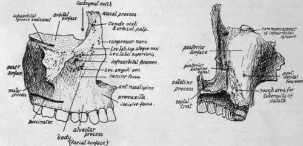

Maxilla
Description
This section is from the book "The Anatomy Of The Human Skeleton", by J. Ernest Frazer. Also available from Amazon: The anatomy of the human skeleton.
Maxilla
The bones that make the upper jaw form the main skeleton of the face : each bone is situated below the orbit and beside the nose, forming part of the bony walls of these cavities, and also makes the greater part of the roof of the mouth. It is placed in front of the pterygoid region of the sphenoid, but is of course much wider than this region transversely.
Each maxilla has a body, below which its alveolar process carries the teeth ; a palatine or horizontal process articulating with its fellow in the middle line below the nasal region ; a nasal process standing up from the front and upper part of the body to articulate with the frontal; and a rough malar process externally that carries the malar, through which the maxilla is once more connected, indirectly, with the frontal as well as with the temporal.
The body is roughly a three-sided pyramid, with its base forming part of the outer wall of the nasal fossa and its apex supporting the malar, an upper orbital surface, an anterior facial surface, and a rounded posterior surface. The body is hollow, containing the large air sinus known as the antrum of Highmore or maxillary sinus, which opens into the nasal fossa.
The orbital surface, triangular in accordance with the pyramidal conception of the body, is nearly flat, but forms a sloping plane looking upwards and outwards and slightly forwards. It is grooved from behind, forwards and outwards, by the infraorbital nerve and vessels, the groove ending in front in the infraorbital canal. The surface is in contact with the inferior Rectus and inferior Oblique muscles, the latter arising from it, and is continuous externally with the rough area for the malar. Its anterior border forms a part of the lower orbital margin, the posterior border is the lower margin of the spheno-maxillary fissure, and the inner margin supports the ethmoid except where the orbital process of the palate, at the posterior end of the margin, reaches the floor of the orbit between the two bones : at the front end of the inner margin, just behind the nasal process, is the lachrymal notch, which is made into a complete canal or foramen by the lachrymal bone, and this bone articulates with the maxilla along the posterior border of the notch as well as along the nasal process.
Fig. 184.-Right maxilla. 1. From the front and outer side : the alveolar portion in front, and below the level of origin of Buccinator behind, is covered by mucous membrane and can be examined from the mouth. 2. Posterior surface, showing the part which makes the front wall of the sphenomaxillary fossa and, outside this, the front wall of the zygomatic fossa.
The facial surface (Fig 184) of the body, antero-extcrnal, is rather concave from the presence of the malar process and the canine fossa, above which, and about one-third of an inch below the orbital margin, is the anterior opening (infraorbital foramen) of the infraorbital canal. The surface is directly continuous below with that of the alveolar process, which presents ridges and depressions corresponding with the position of the fangs of the teeth : the front surface of the body is bounded internally by the sharp margin of the nasal opening, but the alveolus is continued below this to the middle line to meet its fellow and to carry the incisors, and it presents here an anterior concavity, the incisive or myrtiform fossa. This part of the alveolus, frequently termed the pre maxilla, is continuous behind with the palatine process, and is limited above by the lower margin of the nasal orifice, which is produced centrally into a nasal spine. The incisive slip of the Orbicularis oris takes origin from the incisive fossa.
The facial surface is covered in its upper part by fibres of Orbicularis palpebrarum, over the alveolar portion by mucous membrane and Orbicularis oris and Buccinator, and between these two areas by small facial muscles passing to the upper lip : the Levator anguli oris arises below the foramen, and the Levator labii superioris above the foramen, both under cover of the orbicular fibres of the lower hd ; while the Levator anguli oris alaeque nasi and Compressor naris take origin further in near the root of the nasal process.
The posterior or postero-external surface (Fig. 184) is separated from the one last described by the prominent lower border of the projection that supports the malar, but the alveolar process is carried continuously to the back of the bone below this projection and affords origin to Buccinator. The posterior surface is rounded and forms the front wall of the fossa that lies deep to the zygoma and below the inferior temporal crest and outside the outer pterygoid plate : the fossa is termed the zygomatic or infratemporal, and is occupied by the External Pterygoid and, superficial to this, by the tendon of the Temporal muscle and the coronoid process of the mandible which receives this tendon. The inner part of the posterior surface, however, is in front of the pterygoid region of the sphenoid, and therefore constitutes the front wall of the sphenomaxillary fossa. This fossa is closed below by the tuberosity of the palate bone fitting in between the maxilla and the pterygoid plates, so that a rough area for this tuberosity is visible on the lower and inner part of the posterior surface of the maxilla. The tuberosity of the palate is always completely interposed between the two bones, and the maxilla never articulates here with the sphenoid, although the suture lines between the various elements are not as a rule visible on the complete skull. Impressions made on the bone by certain of the structures leaving the fossa can be easily seen : thus, the posterior dental and alveolar vessels and nerves reach foramina on the back aspect of the bone, the commencement of the infraorbital groove is seen above, and the posterior palatine groove, completed by the palate bone, is apparent low down on the back and inner aspect of the body in front of the area for the tuberosity of the palate.
Continue to: